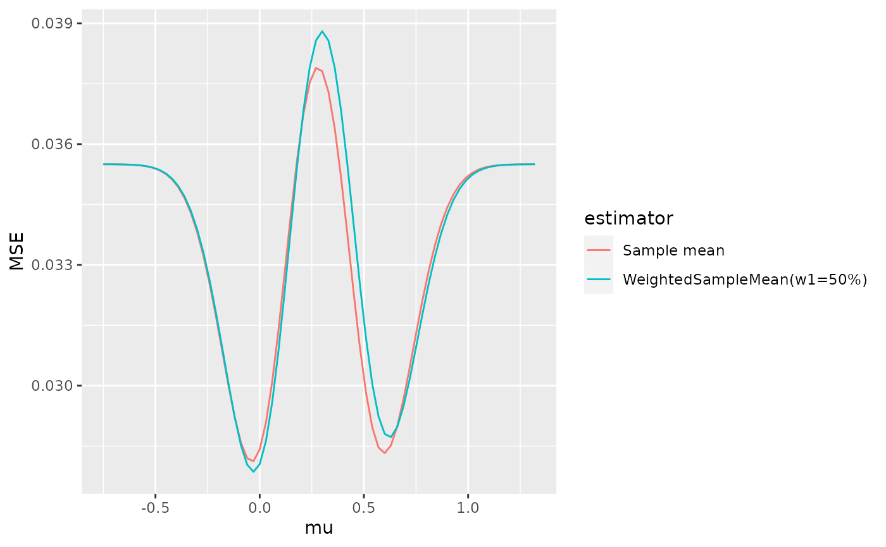

Introduction to adestr
Jan Meis
2023-09-25
Introduction.RmdIntroduction
This package implements methods to evaluate the performance characteristics of various point and interval estimators for adaptive two-stage designs with prespecified sample-size recalculation rules. Further, it allows for evaluation of these estimators on real datasets, and it implements methods to calculate p-values.
Currently, it works for designs objects which were produced by the
R-package adoptr, which calculates optimal design
parameters for adaptive two-stage designs. You can learn about adoptr
here: kkmann.github.io/adoptr/.
Fitting a design with adoptr
In order to showcase the capabilities of this package, we need a trial design first. We refer to the example from the adoptr documentation for this. You can read more about optimal adaptive designs fitted via the adoptr package here: kkmann.github.io/adoptr/articles/adoptr_jss.html.
For the sake of this introduction, a pre-computed version of the
first example from kkmann.github.io/adoptr/articles/adoptr.html
is provided with this package via the get_example_design
function.
library(adestr)
get_example_design(two_armed = TRUE)
#> TwoStageDesign<n1=56;0.8<=x1<=2.3:n2=18-80>Example
Evaluating the mean squared of an estimator
Now that we have created an optimal adaptive design, we can
investigate the performance characteristics of various estimators for
the mean in that design. To this end, the
evaluate_estimator function can be used.
evaluate_estimator(
score = MSE(),
estimator = SampleMean(),
data_distribution = Normal(two_armed = TRUE),
design = get_example_design(two_armed = TRUE),
mu = 0.3,
sigma = 1
)
#> Design: TwoStageDesign<n1=56;0.8<=x1<=2.3:n2=18-80>
#> Data Distribution: Normal<two-armed>
#> Estimator: Sample mean
#> Assumed sigma: 1
#> Assumed mu: 0.3
#> Results:
#> Expectation: 0.3056727
#> Bias: 0.005672677
#> Variance: 0.03777784
#> MSE: 0.03781002The mean squared error of the sample mean depends on the true
underlying value of the paramter \(\mu\), which of course is unknown.
Therefore, it may be advisable to use the
evaluate_estimator function on an array of values for \(\mu\) to investigate the distributional
properties of an estimator.
In the following, the MSE of the sample mean vs. a weighted sample mean with fixed weights will be plotted.
mse_mle <- evaluate_estimator(
score = MSE(),
estimator = SampleMean(),
data_distribution = Normal(two_armed = TRUE),
design = get_example_design(two_armed = TRUE),
mu = seq(-0.75, 1.32, .03),
sigma = 1
)
mse_weighted_sample_means <- evaluate_estimator(
score = MSE(),
estimator = WeightedSampleMean(w1 = .8),
data_distribution = Normal(two_armed = TRUE),
design = get_example_design(two_armed = TRUE),
mu = seq(-0.75, 1.32, .03),
sigma = 1
)
plot(c(mse_mle, mse_weighted_sample_means))
Analyzing datasets
Next, let us look at how to the package can be used to calculate estimates after data has been collected.
The first stage data of a trial might look like this:
set.seed(321)
dat <- data.frame(
endpoint = c(rnorm(56, .3, 1), rnorm(56, 0, 1)),
group = factor(rep(c("trt", "ctl"),
c(56,56)), levels = c("trt", "ctl")),
stage = rep(1, 112)
)
head(dat)
#> endpoint group stage
#> 1 2.00490322 trt 1
#> 2 -0.41203856 trt 1
#> 3 0.02201509 trt 1
#> 4 0.18035098 trt 1
#> 5 0.17603938 trt 1
#> 6 0.56818377 trt 1
analyze(data = dat,
statistics = list(),
data_distribution = Normal(two_armed = TRUE),
design = get_example_design(two_armed = TRUE),
sigma = 1)
#> Design: TwoStageDesign<n1=56;0.8<=x1<=2.3:n2=18-80>
#> Data Distribution: Normal<two-armed>
#> Observed number of stages: 1
#> Observed n1 (group 1) 56
#> Observed n1 (group 2) 56
#> Observed n1 (total) 112
#> Z1 1.75
#> Interim decision: continue to second stage
#> Calculated n2(Z1) (per group) 46.99923
#> Calculated c2(Z1) 1.14The results suggest recruiting 23 more patients per group for the second stage.
We will simulate 47 more patients per group:
dat <- rbind(dat,
data.frame(
endpoint = c(rnorm(47, .3, 1), rnorm(47, 0, 1)),
group = factor(rep(c("trt", "ctl"),
c(47, 47)), levels = c("trt", "ctl")),
stage = rep(2, 94)
))Now, we can use the analyze function to evaluate a
selection of estimators on the complete dataset:
analyze(
data = dat,
statistics = c(
SampleMean(),
BiasReduced(),
PseudoRaoBlackwell(),
MedianUnbiasedStagewiseCombinationFunctionOrdering(),
StagewiseCombinationFunctionOrderingCI(),
StagewiseCombinationFunctionOrderingPValue()
),
data_distribution = Normal(two_armed = TRUE),
sigma = 1,
design = get_example_design(two_armed = TRUE)
)
#> Design: TwoStageDesign<n1=56;0.8<=x1<=2.3:n2=18-80>
#> Data Distribution: Normal<two-armed>
#> Observed number of stages: 2
#> Observed n1 (group 1) 56
#> Observed n1 (group 2) 56
#> Observed n1 (total) 112
#> Z1 1.75
#> Interim decision: continue to second stage
#> Calculated n2(Z1) (per group) 46.99923
#> Calculated c2(Z1) 1.14
#> Observed n2 (group 1) 47
#> Observed n2 (group 2) 47
#> Observed n2 (in total) 94
#> Z2 2.71
#> Final test decision: reject null
#>
#> Stage 2 results:
#> Sample mean: 0.434684
#> Bias reduced MLE (iterations=1): 0.4221533
#> Pseudo Rao-Blackwellized: 0.2658506
#> Median unbiased (SWCF ordering): 0.3047428
#> SWCF ordering CI: [0.04435513, 0.5484439]
#> SWCF ordering p-value: 0.01097266The estimates presented here are for the difference in means of the two normal distributions. Keep in mind that a difference of \(\mu=0.3\) was used in the simulation.
Note that while the median unbiased estimator performs well in this particular example, this is not universally true.